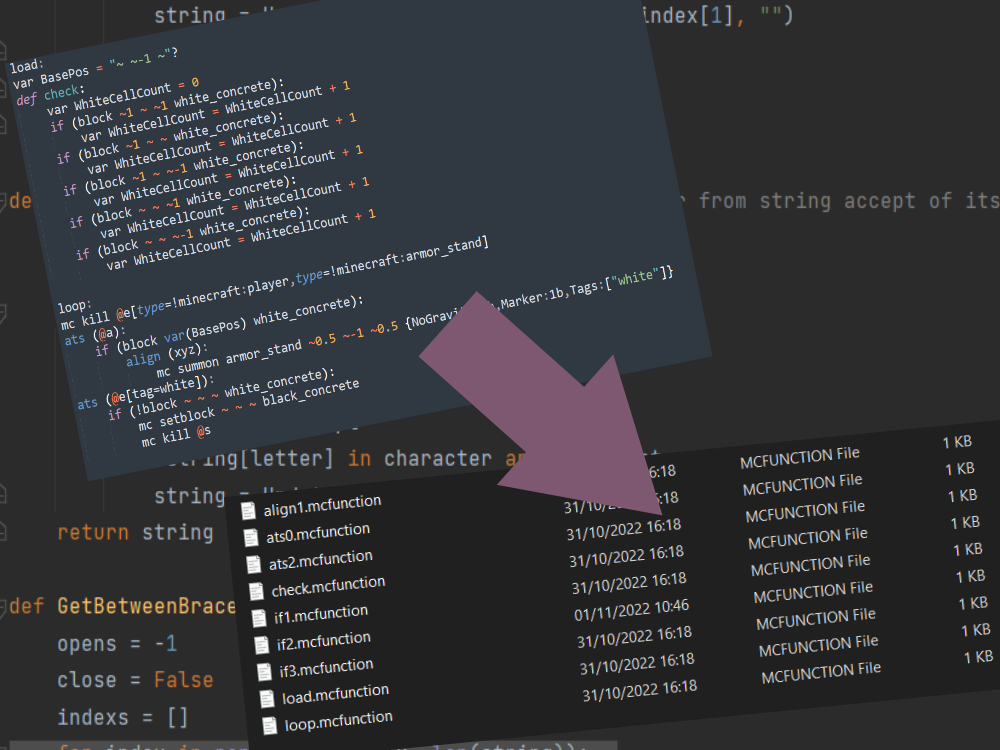

Een compiler die mijn eigen gemaakte codeertaal omzet in Minecraft commands, zodat het makkelijker is om datapacks te maken. Wat zijn datapacks? Nou, een datapack in Minecraft is een folder in je Minecraft-wereld folder met Minecraft commands erin zoals teleport of setblock. En je kunt een heleboel dingen mee doen, mijn doel is om het proces van het maken van een datapack meer helder en gemakkelijker te maken. ik leer een veel dingen uit dit project, zoals het gebruik van de correcte termen bij het benoemen van variabelen en het maken van duidelijke functies